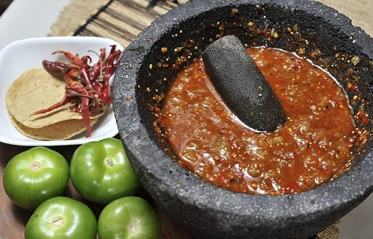
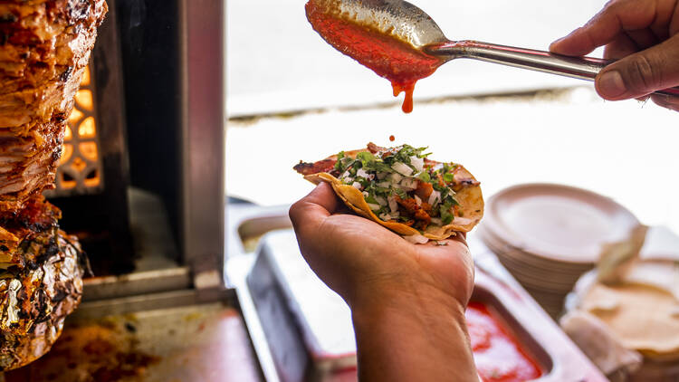
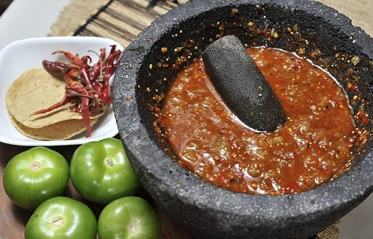
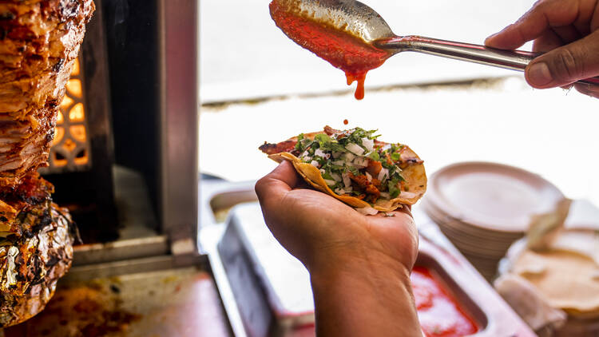
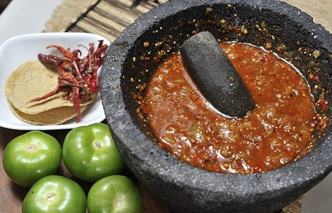
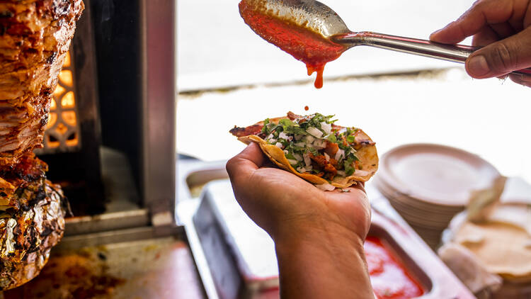

Visitanos y disfruta del mejor sabor
Contamos con los mejores sabores
 



Visitanos y disfruta del mejor sabor
Contamos con los mejores sabores


© 2025 Taqueria Mexicana Chiapaneca. Todos los derechos reservados.